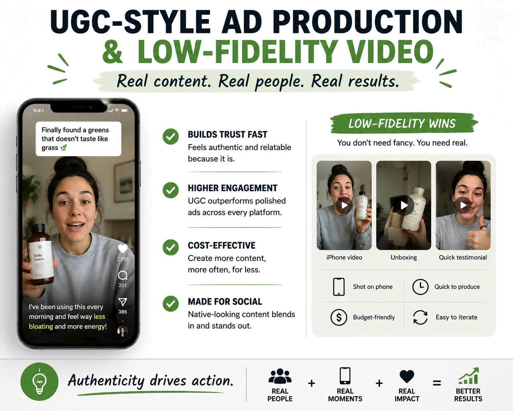
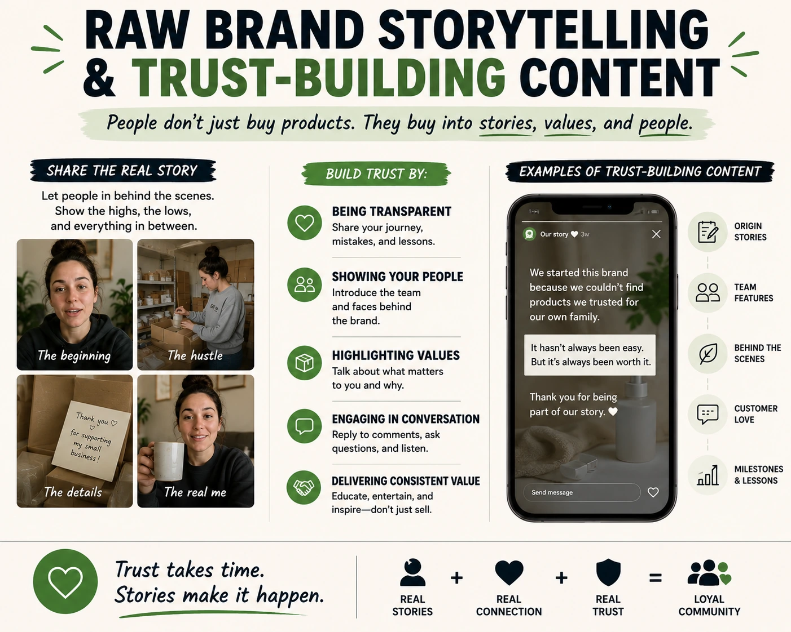

Why Raw, Unfiltered Content Outperforms Highly Glossy Ads
The Paradox That Is Reshaping Digital Advertising
Indian brands are spending more on production quality than ever before — better cameras, larger crews, more elaborate sets, higher-end post-production — and watching their carefully crafted, beautifully polished ad content underperform against a competitor's shaky, handheld, barely-edited phone video on the same platform, in the same campaign, targeting the same audience.
This is not an anomaly. It is a structural shift in how social media audiences process and respond to content — and understanding it is the difference between a digital ads photo and video production strategy that delivers commercial returns and one that produces impressive showreels and mediocre ROAS.
Raw, unfiltered, low-fidelity content — when produced with genuine creative intelligence — consistently outperforms highly glossy advertising across Instagram Reels, TikTok, and YouTube Shorts. This guide explains why, what the mechanism is, and how to produce authentic social media content creation and UGC-style digital ads that earn trust, engagement, and conversion without looking like they came out of a production facility.
The Neuroscience of Why Polish Signals "Ad" and Why That Kills Performance
The brain processes visual and audio signals at extraordinary speed — categorising incoming information as "relevant" or "irrelevant" before the conscious mind has had time to evaluate the content itself. Years of advertising exposure have trained the Indian social media audience to make this categorisation based on production cues: a specific quality of colour grading, a certain type of background music, a particular camera movement, a particular delivery cadence from an on-screen presenter.
When the brain identifies these cues — within the first one to two seconds of a video — it categorises the content as advertising and activates the same avoidance response that makes people reach for the remote to mute a television commercial. The viewer does not consciously decide to skip; the skip impulse is generated before conscious evaluation begins. High production value — the very thing brands have been trained to invest in — has become a signal that triggers this avoidance response.
Low-fidelity ad video production and UGC-style digital ads work by bypassing this categorisation mechanism. A video shot on what appears to be a phone, in a natural lighting environment, with a conversational delivery that resembles how a friend would talk about a product — does not match the brain's "advertising" pattern. It is processed as peer communication. And peer communication earns trust, attention, and engagement that advertising cannot.
Higher Completion Rate
Content that does not register as advertising is not skipped — it is watched. Higher completion rates generate stronger algorithmic distribution, compounding the reach advantage of authentic-feeling content over polished ad creative.
Stronger Comment and Share Behaviour
Raw, conversational content invites participation — comments, replies, tags — in a way that polished brand content does not. Participation signals generate higher algorithm distribution and extend organic reach beyond the brand's existing following.
Lower Cost-Per-Click
On Meta and Google platforms, ad creative that earns higher click-through rates is rewarded with lower cost-per-click through auction mechanics. UGC-style digital ads consistently earn higher CTR than equivalent polished creative — directly reducing paid media cost.
Higher Conversion Rate
Trust is the primary conversion driver for first-time buyers. Content that feels authentic — that feels like a peer recommendation rather than a brand claim — builds the trust that converts consideration into purchase more effectively than any production quality level alone.

UGC-Style Digital Ads: The Art of Intentional Authenticity
UGC-style digital ads are the most commercially significant creative format in digital advertising in 2026 — and the most widely misunderstood. The misunderstanding is that they are simply low-effort content: point a phone at someone, have them talk about the product, publish it. This produces content that looks authentic but performs poorly — because authentic-looking content and authentic-feeling content are different things.
Authentic-looking content has the visual characteristics of UGC — phone camera quality, natural light, conversational framing — but the emotional delivery of an advertisement: scripted, stiff, unnatural, with the specific cadence of someone reading a brand brief on camera. The audience recognises this immediately. The visual authenticity signals lower the guard; the delivery authenticity failure raises it again.
Authentic-feeling content has both the visual characteristics and the emotional delivery of genuine peer communication. Producing this intentionally — with a brand message, a clear call to action, and a specific commercial objective — is a creative discipline that requires specific skills:
- Scripting that sounds unscripted. The script for a UGC-style digital ad is not a word-for-word text to be read aloud. It is a message architecture — the specific point to communicate, the order of points, the emotional register — delivered in the speaker's own natural language rather than brand copywriting. A script that says "I was genuinely sceptical when I first tried this" and is delivered in the speaker's own dialect and cadence sounds different from the same script read verbatim. The former sounds like a person; the latter sounds like an ad.
- Direction that produces natural delivery. Getting a non-professional speaker — a real customer, a founder, a brand employee — to deliver authentically on camera requires direction that does not look like direction. The best directors of UGC-style content work conversationally — asking questions that produce the answer they need, creating scenarios that generate the emotional reaction the video requires, and building the speaker's comfort to the point where they forget they are being filmed.
- Visual imperfection as a production choice. The specific imperfections that signal authenticity — slight camera movement, variable focus, natural sound variations, unconventional framing — need to be present in the final content but cannot be so extreme that they undermine watchability. This balance is a production judgment, not an accident: professional low-fidelity ad video production creates authentic-feeling imperfection intentionally, not because the production team lacked the tools to eliminate it.
Raw Brand Storytelling: Authenticity With a Commercial Spine
Raw brand storytelling is the content format that most powerfully combines the trust-building effects of authentic content with the commercial intent of brand advertising. It is not random behind-the-scenes footage. It is not unstructured testimonials. It is a specific narrative approach: the brand's story told in the brand's real voice, with real stakes, real imperfections, and a real perspective — and a commercial intention that is present but not dominant.
The formats in which raw brand storytelling performs best for Indian brands on social media in 2026:
- Founder origin stories in the founder's own words. Not a polished brand film narrated by a voiceover artist. A founder speaking directly to the camera — in the office, in the factory, at the market — about why they started the business, what problem they were solving, what went wrong in the first year. This content earns trust at a depth that no polished brand film can reach, because it communicates personal accountability alongside brand values.
- Process and production transparency. Showing how the product is made — not as a stylised manufacturing documentary but as real footage of the actual process, with real workers, real environments, real imperfections. For Indian brands whose products are handcrafted, locally sourced, or traditionally made, this content is the trust signal that justifies the price premium and differentiates the brand from mass-produced competitors.
- Customer stories in the customer's own voice. Not scripted testimonials filmed in a studio. Real customers, in their real environments, talking about their real experience in their own language and cadence. The emotional authenticity of a real person describing a genuine experience — with the hesitations, the specific details, the unexpected moments of genuine feeling — converts viewing audiences at rates that professionally produced testimonials cannot match.
- Failure and recovery narratives. Content that shares a mistake the brand made, a problem a product had, or a challenge the business is navigating — and what was done about it — earns extraordinary trust. The willingness to share imperfection is the strongest signal of confidence and authenticity available in brand content, and it is the format that the Indian social media audience is least accustomed to seeing from brands.
TikTok and Instagram Reels Trend Marketing: When Raw Content Earns Disproportionate Reach
TikTok and Instagram Reels trend marketing is the specific context in which raw content earns its most disproportionate algorithmic advantage. When a trending audio track, a viral format, or a cultural moment is spreading across the platform, the algorithm distributes participating content aggressively — regardless of production quality — because participation in the trend is itself the primary relevance signal.
For Indian brands that have built the infrastructure for rapid content production — a standing relationship with a creator or content team, pre-approved brand guidelines, a fast internal approval process — TikTok and Instagram Reels trend marketing is the opportunity to earn organic reach at a scale that no paid budget could purchase, by producing the most authentic-feeling participation in the trend rather than the most polished one.
The specific creative approach for trend-responsive raw content that converts:
Format Participation
- Use the trending audio track exactly — no remixed or altered version
- Follow the format's structural convention before adding brand specificity
- Participate as a brand that genuinely finds the trend relevant, not as a brand that is inserting itself
- Publish within the first 48 hours of the trend's peak for maximum algorithmic benefit
Brand Integration
- Connect the trend to the brand's product or values in one sentence — organically, not forced
- Keep the brand message secondary to the trend participation in the first 10 seconds
- Use the brand's actual voice, not a brand copywriting voice
- End with the lightest possible call to action — profile visit, not hard sell
Production Approach
- Shoot on a phone or with the minimal equipment the trend format demands
- Use natural lighting in a real environment — not a branded set
- Minimal editing — cuts only where the trend format requires them
- Publish with a caption written in the same conversational register as the trend

Building Brand Trust Online: The Long-Term Compounding Effect of Authenticity
Building brand trust online through raw and authentic content is not a single campaign strategy — it is a compounding long-term investment. Every piece of authentic content that earns genuine engagement adds to the brand's social proof library, extends the brand's reach to new audiences through shares and saves, and deepens the parasocial relationship between the brand and its existing audience.
The compounding mechanism works as follows: a brand that consistently publishes authentic, raw content — founder stories, process transparency, customer voices, honest product discussions — builds an audience that has chosen to follow based on genuine interest rather than passive algorithmic exposure. This chosen audience engages more deeply, converts more readily, returns more frequently, and advocates more actively than an audience built through polished awareness advertising.
Over twelve to eighteen months, a brand with a consistent authentic social media content creation strategy typically sees three commercially significant effects:
- Declining paid media cost-per-acquisition. As organic trust and brand recognition build through authentic content, the brand's paid advertising benefits from a warm audience that recognises and trusts the brand before seeing the ad — reducing the number of exposures needed to drive conversion and the cost of each conversion.
- Increasing organic content reach. A library of authentic content that has consistently earned strong engagement signals trains the algorithm to distribute the brand's content more broadly — creating a self-reinforcing cycle where authenticity earns reach, reach earns more engagement, and more engagement earns more reach.
- Growing UGC generation from actual customers. A brand whose content demonstrates authentic values and genuine engagement with its community earns organic UGC from real customers at a higher rate than one communicating through polished brand advertising alone. Real customer content then becomes the brand's most powerful and most cost-effective advertising creative.
The Production Framework: Raw Authenticity Is Still Produced
The most important misconception to address about raw, authentic content strategy is that it means low production standards. It does not. Low-fidelity ad video production is a deliberate creative and production choice — not an accident of limited budget or capability. The most effective UGC-style digital ads and raw brand content are produced with the same level of creative intelligence, strategic planning, and intentional execution as the glossy alternatives — they simply use a different aesthetic register and a different production approach.
The creative advertising strategies framework for producing authentic content intentionally:
- Strategic brief before production. Define the specific audience, the specific trust barrier being addressed, the specific emotional response the content needs to produce, and the specific call to action — before selecting a format or picking up a camera.
- Speaker selection and preparation. Choose the speaker — founder, customer, employee — whose authentic relationship with the brand or product produces the most genuine on-camera energy. Prepare them with a message architecture, not a script. Allow multiple takes and select the one that sounds most natural, not the one that is most precisely on-message.
- Production for platform-native aesthetics. Research what authentic content on the specific platform looks like at the moment of production — the framing conventions, the pacing, the audio treatment — and produce to those conventions deliberately. Platform-native aesthetics change faster than production playbooks: what looked authentic on Reels twelve months ago may look dated and produced today.
- Post-production that preserves authenticity. Minimal colour grading, minimal music, minimal text overlay — only what the platform's consumption patterns require for the content to be watchable without sound and comprehensible at speed. Post-production that over-polishes a raw production destroys the authenticity that the raw production created.
- Testing against polished variants. Run UGC-style digital ads against polished equivalents on the same audience with the same objective and the same budget. Use the platform's performance data — not creative opinion — to determine which format earns the stronger commercial result for this specific brand, audience, and campaign objective.
When Glossy Still Wins: Understanding the Format Split
Raw and authentic content does not outperform polished content in every context. The most sophisticated digital ads photo and video production strategies use both, understanding which format serves which commercial objective:
- High production value still wins for: premium product hero presentation, brand credibility establishment with a cold audience that knows nothing about the brand, luxury positioning where visual quality is itself the signal, and out-of-home and large-format contexts where the production environment demands a minimum visual standard.
- Raw and authentic content wins for: lower-funnel conversion with warm audiences who are aware but unconverted, trust-building with audiences who have high ad-resistance, social proof and testimonial contexts, trend-responsive content that needs to earn algorithmic distribution through native aesthetics, and retargeting creative that needs to feel different from the initial awareness content the audience has already seen.
The most effective creative advertising strategies for Indian brands in 2026 do not choose between glossy and raw — they use glossy to establish and raw to convert, running both simultaneously across a funnel-staged campaign architecture that serves different creative to different audiences at different stages of their relationship with the brand.
Conclusion
Raw, unfiltered content outperforms highly glossy ads not because quality does not matter — it matters enormously — but because the audience has learned to identify and skip content that signals "advertising." Authentic social media content creation, UGC-style digital ads, raw brand storytelling, and low-fidelity ad video production are not retreats from quality. They are advances toward a different and more commercially effective definition of quality — one that measures performance by trust earned and conversion delivered, not by production values visible only in the making.
Building brand trust online through authentic content is the highest-ROI creative advertising strategy available to Indian brands in 2026. And it is available to every brand willing to produce content that sounds and feels like what it actually is — a genuine brand, with a genuine product, talking honestly to a genuine audience.
At The PhD Ads, we produce digital ads photo and video production across the full spectrum — from cinematic high-production brand films to UGC-style digital ads, low-fidelity ad video production, and authentic social media content creation built for Indian brands that understand the difference between looking premium and earning trust.
Key Topics
Ready to Build Content That Earns Trust and Converts?
At The PhD Ads, we produce digital ad content across the full authenticity spectrum — from UGC-style digital ads and low-fidelity video production to raw brand storytelling and authentic social media content creation, built for Indian brands ready to move beyond glossy and start converting.
Email: team@e2o.in